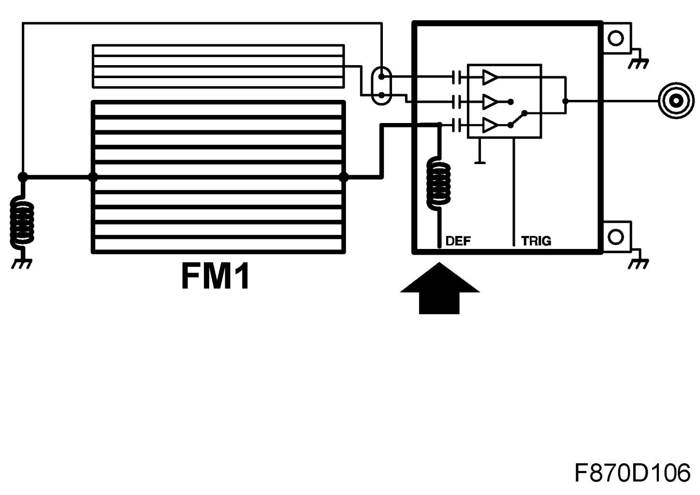
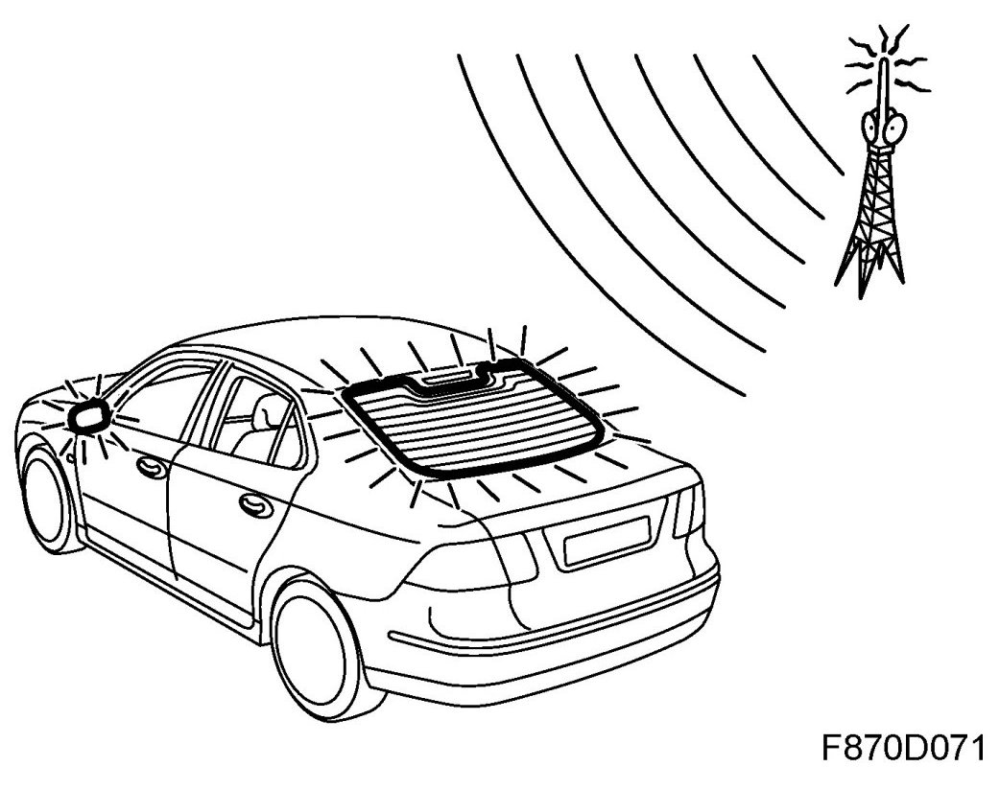
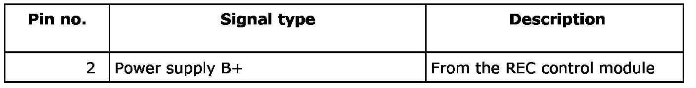
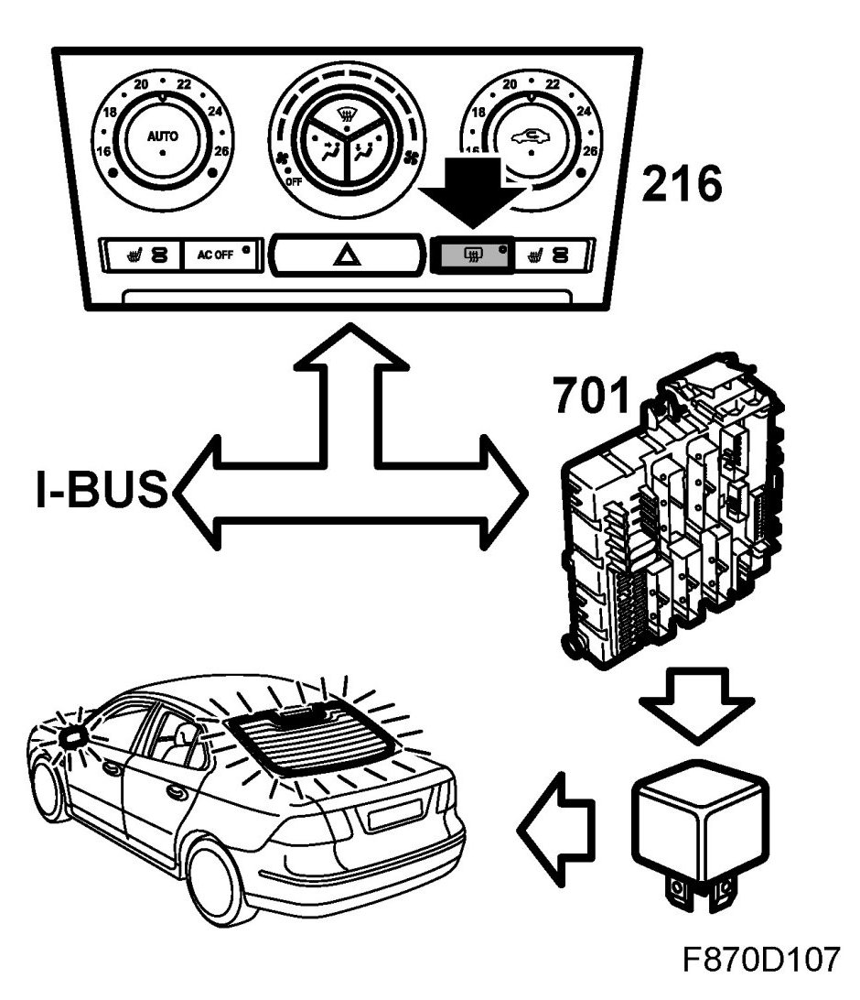
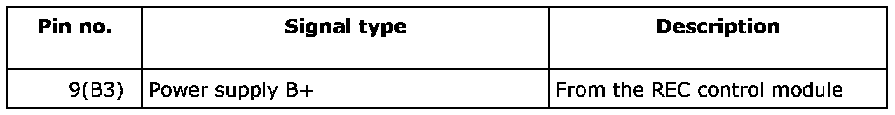
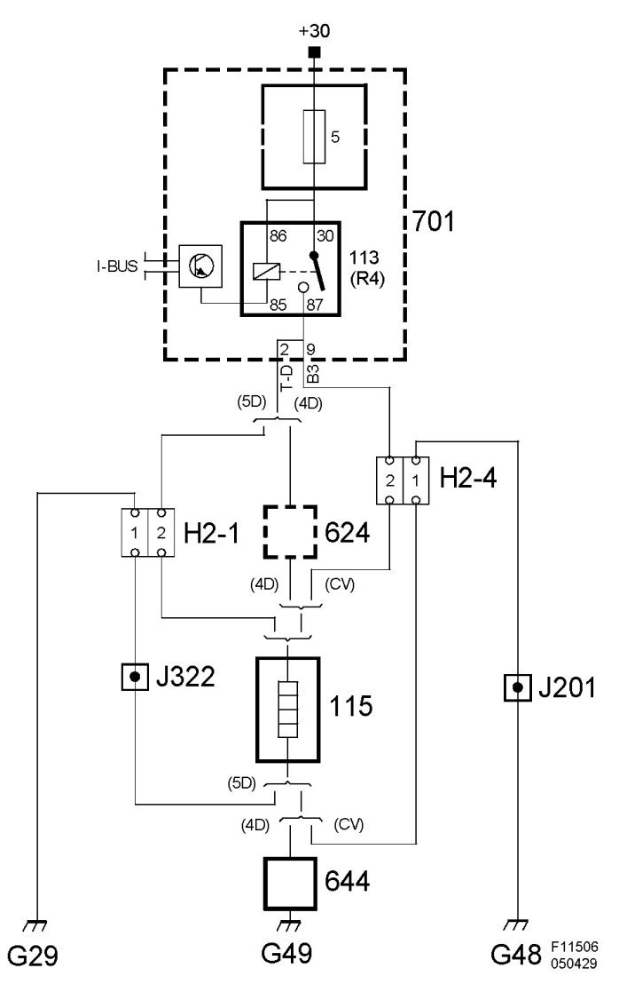

Connector Views
Heating Element, Rear Window (115)
Location
Heating element, rear window (115)

Main task
For fast electric window heating during cold-weather starts.
4D, 5D: The circuit is also used for FM reception.

Type
The electrically-heated rear window consists of several wires which conduct electricity and are glued to the glass.
Connect
Electrically heated rear window, 4D
The heating coil receives voltage B+ from REC pin 2 (electrically-heated rear window relay) through the antenna amplifier and is connected to ground through an antenna filter which blocks the antenna ground signal.


Electrically heated rear window, CV
Electrical heating coil is supplied with voltage B+ from REC pin 9(B3) (relay, electrically heated rear window).

Radio reception, 4D/5D
The antenna signal is received and fed to the antenna amplifier. In order that the antenna signal should not interfere with the heating coil power supply, the amplifier contains a filter which blocks the antenna signal. The heating coil ground side contains an antenna filter which blocks the antenna signal from ground.
